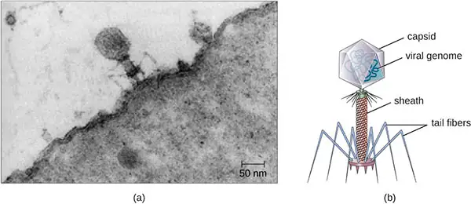

Preface¶
Welcome to Microbiology, an OpenStax resource. This textbook was written to increase student access to high-quality learning materials, maintaining highest standards of academic rigor at little to no cost.
About OpenStax¶
OpenStax is part of Rice University, which is a 501(c)(3) nonprofit charitable corporation. As an educational initiative, it's our mission to improve educational access and learning for everyone. Through our partnerships with philanthropic organizations and our alliance with other educational resource companies, we're breaking down the most common barriers to learning. Because we believe that everyone should and can have access to knowledge.
About OpenStax Resources¶
Customization¶
Microbiology is licensed under a Creative Commons Attribution 4.0 International (CC BY) license, which means that you can distribute, remix, and build upon the content, as long as you provide attribution to OpenStax and its content contributors.
Because our books are openly licensed, you are free to use the entire book or pick and choose the sections that are most relevant to the needs of your course. Feel free to remix the content by assigning your students certain chapters and sections in your syllabus, in the order that you prefer. You can even provide a direct link in your syllabus to the sections in the web view of your book.
Instructors also have the option of creating a customized version of their OpenStax book. The custom version can be made available to students in low-cost print or digital form through their campus bookstore. Visit your book page on openstax.org for more information.
Errata¶
All OpenStax textbooks undergo a rigorous review process. However, like any professional-grade textbook, errors sometimes occur. Since our books are web-based, we can make updates periodically when deemed pedagogically necessary. If you have a correction to suggest, submit it through the link on your book page on openstax.org. Subject matter experts review all errata suggestions. OpenStax is committed to remaining transparent about all updates, so you will also find a list of past errata changes on your book page on openstax.org.
Format¶
You can access this textbook for free in web view or PDF through openstax.org, and for a low cost in print.
About Microbiology¶
Microbiology is designed to cover the scope and sequence requirements for the single-semester Microbiology course for non-majors. The book presents the core concepts of microbiology with a focus on applications for careers in allied health. The pedagogical features of Microbiology make the material interesting and accessible to students while maintaining the career-application focus and scientific rigor inherent in the subject matter.
Coverage and Scope¶
The scope and sequence of Microbiology has been developed and vetted with input from numerous instructors at institutions across the US. It is designed to meet the needs of most microbiology courses for non-majors and allied health students. In addition, we have also considered the needs of institutions that offer microbiology to a mixed audience of science majors and non-majors by frequently integrating topics that may not have obvious clinical relevance, such as environmental and applied microbiology and the history of science.
With these objectives in mind, the content of this textbook has been arranged in a logical progression from fundamental to more advanced concepts. The opening chapters present an overview of the discipline, with individual chapters focusing on microscopy and cellular biology as well as each of the classifications of microorganisms. Students then explore the foundations of microbial biochemistry, metabolism, and genetics, topics that provide a basis for understanding the various means by which we can control and combat microbial growth. Beginning with Chapter 15, the focus turns to microbial pathogenicity, emphasizing how interactions between microbes and the human immune system contribute to human health and disease. The last several chapters of the text provide a survey of medical microbiology, presenting the characteristics of microbial diseases organized by body system.
A brief Table of Contents follows. While we have made every effort to align the Table of Contents with the needs of our audience, we recognize that some instructors may prefer to teach topics in a different order. A particular strength of Microbiology is that instructors can customize the book, adapting it to the approach that works best in their classroom.
Chapter 1: An Invisible World
Chapter 2: How We See the Invisible World
Chapter 3: The Cell
Chapter 4: Prokaryotic Diversity
Chapter 5: The Eukaryotes of Microbiology
Chapter 6: Acellular Pathogens
Chapter 7: Microbial Biochemistry
Chapter 8: Microbial Metabolism
Chapter 9: Microbial Growth
Chapter 10: Biochemistry of the Genome
Chapter 11: Mechanisms of Microbial Genetics
Chapter 12: Modern Applications of Microbial Genetics
Chapter 13: Control of Microbial Growth
Chapter 14: Antimicrobial Drugs
Chapter 15: Microbial Mechanisms of Pathogenicity
Chapter 16: Disease and Epidemiology
Chapter 17: Innate Nonspecific Host Defenses
Chapter 18: Adaptive Specific Host Defenses
Chapter 19: Diseases of the Immune System
Chapter 20: Laboratory Analysis of the Immune Response
Chapter 21: Skin and Eye Infections
Chapter 22: Respiratory System Infections
Chapter 23: Urogenital System Infections
Chapter 24: Digestive System Infections
Chapter 25: Circulatory and Lymphatic System Infections
Chapter 26: Nervous System Infections
Appendix A: Fundamentals of Physics and Chemistry Important to Microbiology
Appendix B: Mathematical Basics
Appendix C: Metabolic Pathways
Appendix D: Taxonomy of Clinically Relevant Microorganisms
Appendix E: Glossary
American Society of Microbiology (ASM) Partnership¶
Microbiology is produced through a collaborative publishing agreement between OpenStax and the American Society for Microbiology Press. The book has been developed to align to the curriculum guidelines of the American Society for Microbiology.
About ASM¶
The American Society for Microbiology is the largest single life science society, composed of over 47,000 scientists and health professionals. ASM's mission is to promote and advance the microbial sciences.
ASM advances the microbial sciences through conferences, publications, certifications, and educational opportunities. It enhances laboratory capacity around the globe through training and resources and provides a network for scientists in academia, industry, and clinical settings. Additionally, ASM promotes a deeper understanding of the microbial sciences to diverse audiences and is committed to offering open-access materials through their new journals, American Academy of Microbiology reports, and textbooks.
ASM Recommended Curriculum Guidelines for Undergraduate Microbiology Education¶
PART 1: Concepts and Statements
Evolution
- Cells, organelles (e.g., mitochondria and chloroplasts) and all major metabolic pathways evolved from early prokaryotic cells.
- Mutations and horizontal gene transfer, with the immense variety of microenvironments, have selected for a huge diversity of microorganisms.
- Human impact on the environment influences the evolution of microorganisms (e.g., emerging diseases and the selection of antibiotic resistance).
- The traditional concept of species is not readily applicable to microbes due to asexual reproduction and the frequent occurrence of horizontal gene transfer.
- The evolutionary relatedness of organisms is best reflected in phylogenetic trees.
Cell Structure and Function
- The structure and function of microorganisms have been revealed by the use of microscopy (including bright field, phase contrast, fluorescent, and electron).
- Bacteria have unique cell structures that can be targets for antibiotics, immunity and phage infection.
- Bacteria and Archaea have specialized structures (e.g., flagella, endospores, and pili) that often confer critical capabilities.
- While microscopic eukaryotes (for example, fungi, protozoa and algae) carry out some of the same processes as bacteria, many of the cellular properties are fundamentally different.
- The replication cycles of viruses (lytic and lysogenic) differ among viruses and are determined by their unique structures and genomes.
Metabolic Pathways
- Bacteria and Archaea exhibit extensive, and often unique, metabolic diversity (e.g., nitrogen fixation, methane production, anoxygenic photosynthesis).
- The interactions of microorganisms among themselves and with their environment are determined by their metabolic abilities (e.g., quorum sensing, oxygen consumption, nitrogen transformations).
- The survival and growth of any microorganism in a given environment depends on its metabolic characteristics.
- The growth of microorganisms can be controlled by physical, chemical, mechanical, or biological means.
Information Flow and Genetics
- Genetic variations can impact microbial functions (e.g., in biofilm formation, pathogenicity and drug resistance).
- Although the central dogma is universal in all cells, the processes of replication, transcription, and translation differ in Bacteria, Archaea, and Eukaryotes.
- The regulation of gene expression is influenced by external and internal molecular cues and/or signals.
- The synthesis of viral genetic material and proteins is dependent on host cells.
- Cell genomes can be manipulated to alter cell function.
Microbial Systems
- Microorganisms are ubiquitous and live in diverse and dynamic ecosystems.
- Most bacteria in nature live in biofilm communities.
- Microorganisms and their environment interact with and modify each other.
- Microorganisms, cellular and viral, can interact with both human and nonhuman hosts in beneficial, neutral or detrimental ways.
Impact of Microorganisms
- Microbes are essential for life as we know it and the processes that support life (e.g., in biogeochemical cycles and plant and/or animal microbiota).
- Microorganisms provide essential models that give us fundamental knowledge about life processes.
- Humans utilize and harness microorganisms and their products.
- Because the true diversity of microbial life is largely unknown, its effects and potential benefits have not been fully explored.
PART 2: Competencies and Skills
Scientific Thinking
- Ability to apply the process of science
a. Demonstrate an ability to formulate hypotheses and design experiments based on the scientific method.
b. Analyze and interpret results from a variety of microbiological methods and apply these methods to analogous situations. - Ability to use quantitative reasoning
a. Use mathematical reasoning and graphing skills to solve problems in microbiology. - Ability to communicate and collaborate with other disciplines
a. Effectively communicate fundamental concepts of microbiology in written and oral format.
b. Identify credible scientific sources and interpret and evaluate the information therein. - Ability to understand the relationship between science and society
a. Identify and discuss ethical issues in microbiology.
Microbiology Laboratory Skills
- Properly prepare and view specimens for examination using microscopy (bright field and, if possible, phase contrast).
- Use pure culture and selective techniques to enrich for and isolate microorganisms.
- Use appropriate methods to identify microorganisms (media-based, molecular and serological).
- Estimate the number of microorganisms in a sample (using, for example, direct count, viable plate count, and spectrophotometric methods).
- Use appropriate microbiological and molecular lab equipment and methods.
- Practice safe microbiology, using appropriate protective and emergency procedures.
- Document and report on experimental protocols, results and conclusions.
OpenStax Microbiology Correlation to ASM Recommended Curriculum Guidelines for Undergraduate Microbiology Education¶
| OpenStax Microbiology Correlation to ASM Curriculum Guidelines | |
|---|---|
| Chapter | ASM Curriculum Guidelines |
| 1—An Invisible World | 2, 4, 5, 11, 16, 20, 23, 26, 27, 31 |
| 2—How We See the Invisible World | 6, 31, 32, 33 |
| 3—The Cell | 1, 2, 5, 9, 16, 21, 25, 31 |
| 4—Prokaryotic Diversity | 2, 4, 8, 11, 12, 16, 20, 23, 24, 31 |
| 5—The Eukaryotes of Microbiology | 2, 4, 5, 9, 12, 20, 23, 31 |
| 6—Acellular Pathogens | 4, 10, 18, 23, 31 |
| 7—Microbial Biochemistry | 1, 24, 33, 34 |
| 8—Microbial Metabolism | 1, 11, 12, 13, 22, 24 |
| 9—Microbial Growth | 12, 13, 29, 31, 33, 34, 35 |
| 10—Biochemistry of the Genome | 1, 16, 25, 31 |
| 11—Mechanisms of Microbial Genetics | 1, 2, 15, 16, 17, 31 |
| 12—Modern Applications of Microbial Genetics | 19, 26, 31 |
| 13—Control of Microbial Growth | 13, 14, 26, 31, 36, 37 |
| 14—Antimicrobial Drugs | 3, 7, 14, 15, 23, 26, 31 |
| 15—Microbial Mechanisms of Pathogenicity | 8, 9, 10, 15, 18, 23, 33 |
| 16—Disease and Epidemiology | 7, 14, 23, 26, 31 |
| 17—Innate Nonspecific Host Defenses | 7, 8, 23 |
| 18—Adaptive Specific Host Defenses | 7, 23, 26, 31 |
| 19—Diseases of the Immune System | 7, 8, 24 |
| 20—Laboratory Analysis of the Immune Response | 31, 34 |
| 21—Skin and Eye Infections | 8, 9, 10, 14, 18, 23, 24, 31 |
| 22—Respiratory System Infections | 7, 8, 9, 14, 18, 23, 24, 31 |
| 23—Urogenital System Infections | 7, 8, 9, 12, 14, 18, 22, 23, 24, 31 |
| 24—Digestive System Infections | 7, 8, 9, 10, 14, 18, 23, 24, 31 |
| 25—Circulatory and Lymphatic System Infections | 7, 8, 9, 14, 23, 31 |
| 26—Nervous System Infections | 7, 8, 9, 14, 18, 23, 24, 31 |
Engaging Feature Boxes¶
Throughout Microbiology, you will find features that engage students by taking selected topics a step further. Our features include:
Clinical Focus. Each chapter has a multi-part clinical case study that follows the story of a fictional patient. The case unfolds in several realistic episodes placed strategically throughout the chapter, each episode revealing new symptoms and clues about possible causes and diagnoses. The details of the case are directly related to the topics presented in the chapter, encouraging students to apply what they are learning to real-life scenarios. The final episode presents a Resolution that reveals the outcome of the case and unpacks the broader lessons to be learned.
Case in Point. In addition to the Clinical Focus, many chapters also have one or more single-part case studies that serve to highlight the clinical relevance of a particular topic. These narratives are strategically placed directly after the topic of emphasis and generally conclude with a set of questions that challenge the reader to think critically about the case.
Micro Connections. All chapters contain several Micro Connections feature boxes that highlight real-world applications of microbiology, drawing often-overlooked connections between microbiology and a wide range of other disciplines. While many of these connections involve medicine and healthcare, they also venture into domains such as environmental science, genetic engineering, and emerging technologies. Moreover, many Micro Connections boxes are related to current or recent events, further emphasizing the intersections between microbiology and everyday life.
Sigma Xi Eye on Ethics. This unique feature, which appears in most chapters, explores an ethical issue related to chapter content. Developed in cooperation with the scientific research society Sigma Xi, each Eye on Ethics box presents students with a challenging ethical dilemma that arises at the intersection of science and healthcare. Often grounded in historical or current events, these short essays discuss multiple sides of an issue, posing questions that challenge the reader to contemplate the ethical principles that govern professionals in healthcare and the sciences.
Disease Profile. This feature, which is exclusive to Chapters 21–26, highlights important connections between related diseases. Each box also includes a table cataloguing unique aspects of each disease, such as the causative agent, symptoms, portal of entry, mode of transmission, and treatment. These concise tables serve as a useful reference that students can use as a study aid.
Link to Learning. This feature provides a brief introduction and a link to an online resource that students may use to further explore a topic presented in the chapter. Links typically lead to a website, interactive activity, or animation that students can investigate on their own.
Comprehensive Art Program¶
Our art program is designed to enhance students’ understanding of concepts through clear and effective illustrations, diagrams, and photographs. Detailed drawings, comprehensive lifecycles, and clear micrographs provide visual reinforcement for concepts.

![A diagram of a large cell. The outside of the cell is a thin line labeled plasma membrane. A long projection outside of the plasma membrane is labeled flagellum. Shorter projections outside the membrane are labeled cilia. Just under the plasma membrane are lines labeled microtubules and microfilaments. The fluid inside the plasma membrane is labeled cytoplasm. In the cytoplasm are small dots labeled ribosomes. These dots are either floating in the cytoplasm or attached to a webbed membrane labeled rough endoplasmic reticulum. Some regions of the webbed membrane do not have dots; these regions of the membrane are called smooth endoplasmic reticulum. Other structures in the cytoplasm include an oval with a webbed line inside of it; this is labeled the mitochondrion. Spheres in the cytoplasm are labeled peroxisome and lysosome. A pancake stack of membranes is labeled golgi complex. Two short tubes are labeled centrosomes. A large sphere in the cell is labeled nucleus. The outer membrane of this sphere is the nuclear envelope. Holes in the nuclear envelope are called nuclear pores. A smaller sphere in the nucleus is labeled nucleolus.](img/osc-microbio-03-04-eukcell-fdfa.webp)
![Table of electron microscopes which use electron beams focused with magnets to produce an image. Magnification: 20 – 100,00× or more. Transmission electron microscopes (TEM) use electron means that pass through a specimen to visual small images; useful to observe small, thin specimens such as tissue sections and subcellular structures. The sample image (Ebola virus) shows a tube shaped into a letter d at one end. Scanning electron microscopes (SEM) use electron beams to visualize surfaces; useful to observe the three-dimensional surface details of specimens. The sample image (Campylobactor jejuni) shows thick three-dimensional spirals.](img/osc-microbio-02-03-elecmictb-51b2.webp)
![A diagram of a rod-shaped prokaryotic cell. The thick outer layer is called the capsule, inside of that is a thinner cell wall and inside of that is an even thinner plasma membrane. Inside of the plasma membrane is a fluid called the cytoplasm, little dots called ribosomes, small spheres called inclusions, a small loop of DNA called a plasmid, and a large folded loo of DNA called the nucleoid. Long projections start at the plasma membrane and extend out of the capsule; these are called flagella (singular: flagellum). A shorter projection is labeled pilus. And many very short projections are labeled fimbriae.](img/osc-microbio-03-03-prokcell-b633.webp)
![A drawing of the plasma membrane. The top of the diagram is labeled outside of cell, the bottom is labeled cytoplasm. Separating these two regions is the membrane which is made of mostly a phospholipid bilayer. Each phospholipid is drawn as a sphere with 2 tails. There are two layers of phospholipids making up the bilayer; each phospholipid layer has the sphere towards the outside of the bilayer and the two tails towards the inside of the bilayer. Embedded within the phospholipid bilayer are a variety of large proteins. Glycolipids have long carbohydrate chains (shown as a chain of hexagons) attached to a single phospholipid; the carbohydrates are always on the outside of the membrane. Glycoproteins have a long carbohydrate chain attached to a protein; the carbohydrates are on the outside of the membrane. The cytoskeleton is shown as a thin layer of line just under the inside of the phospholipid bilayer.](img/osc-microbio-03-04-eukplasmem-9d9w.webp)
![Eggs or gravid proplottidis from an infected individual are passed into the environment; this is the diagnostic stage. Cattle (T. saginata) and pigs (T. solium) become infected by ingesting vegetation contaminated by eggs or gravid proglottids. Oncospheres hatch, penetrating intestinal wall and circulate to musculature. The oncospheres develop into cysticerci in muscles and become infective. Humans are infected by ingesting raw or undercooked infected meat. The scolex attaches to intestine and adults are found in the small intestine.](img/osc-microbio-05-02-tapewormlc-5eda.webp)
Materials That Reinforce Key Concepts¶
Learning Objectives. Every section begins with a set of clear and concise learning objectives that are closely aligned to the content and Review Questions.
Summary. The Summary distills the information in each section into a series of concise bullet points. Key Terms in the Summary are bold-faced for emphasis.
Key Terms. New vocabulary is bold-faced when first introduced in the text and followed by a definition in context. Definitions of key terms are also listed in the Glossary in (Appendix E).
Check Your Understanding questions. Each subsection of the text is punctuated by one or more comprehension-level questions. These questions encourage readers to make sure they understand what they have read before moving on to the next topic.
Review Questions. Each chapter has a robust set of review questions that assesses students’ mastery of the Learning Objectives. Questions are organized by format: multiple choice, matching, true/false, fill-in-the-blank, short answer, and critical thinking.
Answers to Questions in the Book¶
Answers to Check Your Understanding questions are not provided. Answers to Review Questions: Multiple Choice, True/False, Fill in the blank, and Matching are provided in the book's Answer Key. Answers to all Review Question types are provided in the Instructor Answer Guide via the Instructor Resources page. Due to the variability of potential responses, answers are not provided for students for Short Answer and Critical Thinking questions.
Additional Resources¶
Student and Instructor Resources¶
We’ve compiled additional resources for both students and instructors, including Getting Started Guides, a test bank, and an instructor answer guide. Instructor resources require a verified instructor account, which can be requested on your openstax.org log-in. Take advantage of these resources to supplement your OpenStax book.
Partner Resources¶
OpenStax Partners are our allies in the mission to make high-quality learning materials affordable and accessible to students and instructors everywhere. Their tools integrate seamlessly with our OpenStax titles at a low cost. To access the partner resources for your text, visit your book page on openstax.org.
About the Authors¶
Senior Contributing Authors¶
Nina Parker (Content Lead), Shenandoah University
Dr. Nina Parker received her BS and MS from the University of Michigan, and her PhD in Immunology from Ohio University. She joined Shenandoah University's Department of Biology in 1995 and serves as Associate Professor, teaching general microbiology, medical microbiology, immunology, and epidemiology to biology majors and allied health students. Prior to her academic career, Dr. Parker was trained as a Medical Technologist and received ASCP certification, experiences that drive her ongoing passion for training health professionals and those preparing for clinical laboratory work. Her areas of specialization include infectious disease, immunology, microbial pathogenesis, and medical microbiology. Dr. Parker is also deeply interested in the history of medicine and science, and pursues information about diseases often associated with regional epidemics in Virginia.
Mark Schneegurt (Lead Writer), Wichita State University
Dr. Mark A. Schneegurt is a Professor of Biological Sciences at Wichita State University and maintains joint appointments in Curriculum and Instruction and Biomedical Engineering. Dr. Schneegurt holds degrees from Rensselaer Polytechnic Institute and a Ph.D. from Brown University. He was a postdoctoral fellow at Eli Lilly and has taught and researched at Purdue University and the University of Notre Dame. His research focuses on applied and environmental microbiology, resulting in 70+ scientific publications and 150+ presentations.
Anh-Hue Thi Tu (Senior Reviewer), Georgia Southwestern State University
Dr. Anh-Hue Tu (born in Saigon, Vietnam) earned a BS in Chemistry from Baylor University and a PhD in Medical Sciences from Texas A & M Health Science Center. At the University of Alabama–Birmingham, she completed postdoctoral appointments in the areas of transcriptional regulation in Escherichia coli and characterization of virulence factors in Streptococcus pneumoniae and then became a research assistant professor working in the field of mycoplasmology. In 2004, Dr. Tu joined Georgia Southwestern State University where she currently serves as Professor, teaching various biology courses and overseeing undergraduate student research. Her areas of research interest include gene regulation, bacterial genetics, and molecular biology. Dr. Tu's teaching philosophy is to instill in her students the love of science by using critical thinking. As a teacher, she believes it is important to take technical information and express it in a way that is understandable to any student.
Brian M. Forster, Saint Joseph's University
Dr. Brian M. Forster received his BS in Biology from Binghamton University and his PhD in Microbiology from Cornell University. In 2011, he joined the faculty of Saint Joseph’s University. Dr. Forster is the laboratory coordinator for the natural science laboratory-based classes designed for students who are not science majors. He teaches courses in general biology, heredity and evolution, environmental science, and microbiology for students wishing to enter nursing or allied health programs. He has publications in the Journal of Bacteriology, the Journal of Microbiology & Biology Education and Tested Studies for Laboratory Education (ABLE Proceedings).
Philip Lister, Central New Mexico Community College
Dr. Philip Lister earned his BS in Microbiology (1986) from Kansas State University and PhD in Medical Microbiology (1992) from Creighton University. He was a Professor of Medical Microbiology and Immunology at Creighton University (1994-2011), with appointments in the Schools of Medicine and Pharmacy. He also served as Associate Director of the Center for Research in Anti-Infectives and Biotechnology. He has published research articles, reviews, and book chapters related to antimicrobial resistance and pharmacodynamics, and has served as an Editor for the Journal of Antimicrobial Chemotherapy. He is currently serving as Chair of Biology and Biotechnology at Central New Mexico Community College.
Contributing Authors¶
Summer Allen, Brown University
Ann Auman, Pacific Lutheran University
Graciela Brelles-Mariño, Universidad Nacional de la Plata
Myriam Alhadeff Feldman, Lake Washington Institute of Technology
Paul Flowers, University of North Carolina–Pembroke
Clifton Franklund, Ferris State University
Ann Paterson, Williams Baptist University
George Pinchuk, Mississippi University for Women
Ben Rowley, University of Central Arkansas
Mark Sutherland, Hendrix College
Reviewers¶
Michael Angell, Eastern Michigan University
Roberto Anitori, Clark College
James Bader, Case Western Reserve University
Amy Beumer, College of William and Mary
Gilles Bolduc, Massasoit Community College
Susan Bornstein-Forst, Marian University
Nancy Boury, Iowa State University
Jennifer Brigati, Maryville College
Harold Bull, University of Saskatchewan
Evan Burkala, Oklahoma State University
Bernadette Connors, Dominican College
Richard J. Cristiano, Houston Community College–Northwest
AnnMarie DelliPizzi, Dominican College
Elisa M. LaBeau DiMenna, Central New Mexico Community College
Diane Dixon, Southeastern Oklahoma State University
Randy Durren, Longwood University
Elizabeth A. B. Emmert, Salisbury University
Karen Frederick, Marygrove College
Sharon Gusky, Northwestern Connecticut Community College
Deborah V. Harbour, College of Southern Nevada
Randall Harris, William Carey University
Diane Hartman, Baylor University
Angela Hartsock, University of Akron
Nazanin Zarabadi Hebel, Houston Community College
Heather Klenovich, Community College of Alleghany County
Kathleen Lavoie, Plattsburgh State University
Toby Mapes, Blue Ridge Community College
Barry Margulies, Towson University
Kevin M. McCabe, Columbia Gorge Community College
Karin A. Melkonian, Long Island University
Jennifer Metzler, Ball State University
Ellyn R. Mulcahy, Johnson County Community College
Jonas Okeagu, Fayetteville State University
Randall Kevin Pegg, Florida State College–Jacksonville
Judy Penn, Shoreline Community College
Lalitha Ramamoorthy, Marian University
Drew Rholl, North Park University
Hilda Rodriguez, Miami Dade College
Sean Rollins, Fitchburg State University
Sameera Sayeed, University of Pittsburgh
Pramila Sen, Houston Community College
Brian Róbert Shmaefsky, Kingwood College
Janie Sigmon, York Technical College
Denise Signorelli, College of Southern Nevada
Molly Smith, South Georgia State College–Waycross
Paula Steiert, Southwest Baptist University
Robert Sullivan, Fairfield University
Suzanne Wakim, Butte Community College
Anne Weston, Francis Crick Institute
Valencia L. Williams, West Coast University
James Wise, Chowan State University
Virginia Young, Mercer University
Adapted from Microbiology by OpenStax, licensed under CC BY 4.0. Access the original for free at openstax.org. Changes: converted to the web reading format of The Open Book Project.